I76 Ambient Vibration Monitoring - Data Processing
John DeVitis July 28th, 2016
vma fcns called: getrms getpsd getcpsd
Contents
- Superstructure Instrumentation Plan
- Substructure Instrumentation
- Load data files
- Sampling Info
- DOF Indices, Coordinates, & Labels
- Data Stats
- Time Plots - Vertical DOF
- Time Plots - Transverse DOF
- Time Plots - Longitudinal DOF
- Power Spectral Density (PSD) - Plot All
- PSD - Plot Vertical
- PSD - Plot Transverse
- PSD - Plot Longitudinal
Superstructure Instrumentation Plan
Note the DOF call outs - they are also the channel numbers (column indices of the data array)
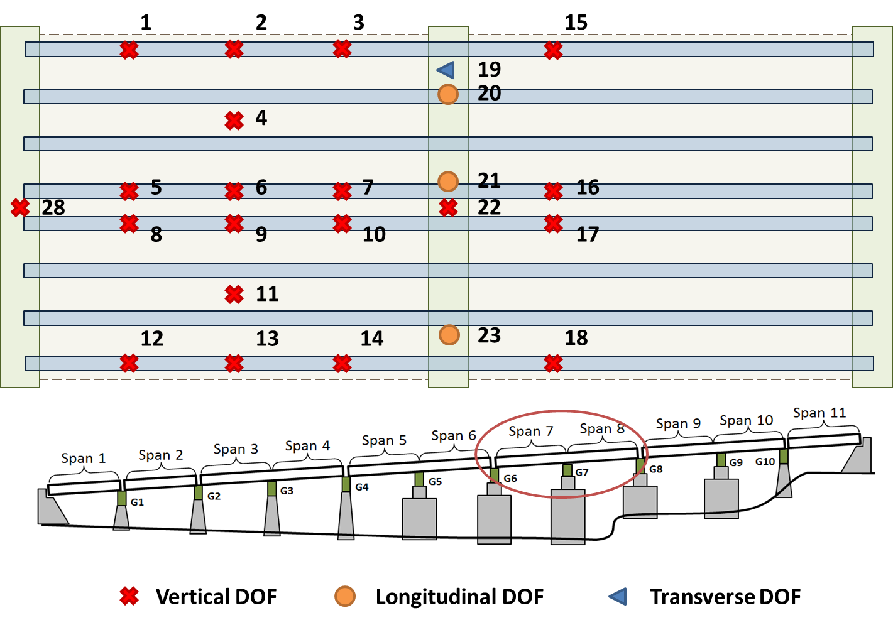
Substructure Instrumentation
Pier G6:
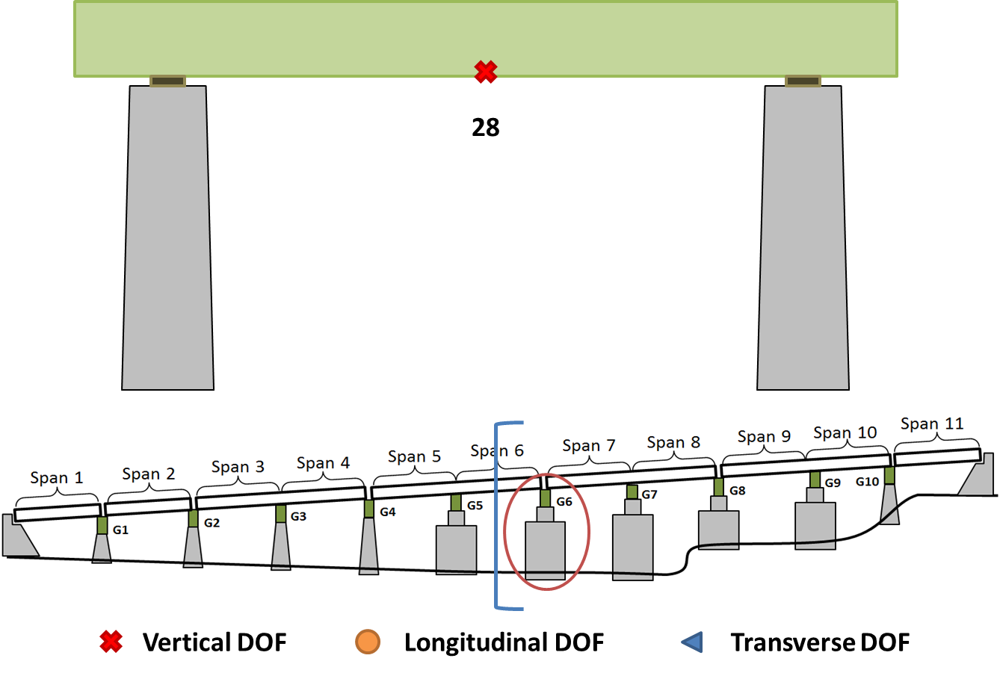
Pier G7:
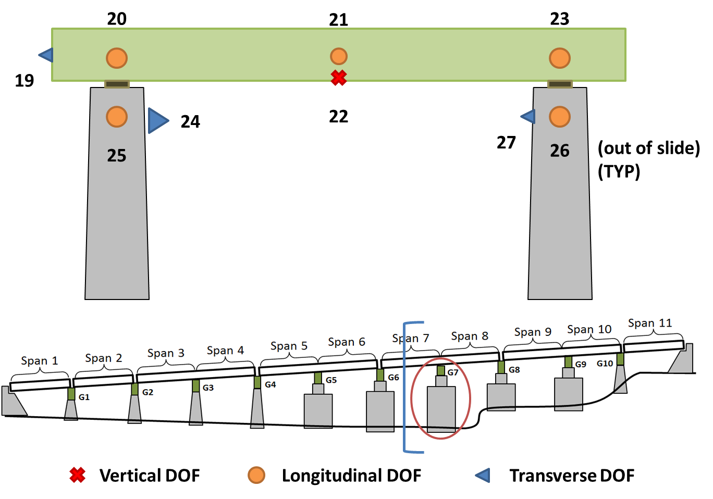
Load data files
- Record starts at 1:16PM on July 27th, 2016
- Video began at ~1:45PM
- File names must be on Matlab's search path
% list of file names (absolute path of where data is stored) fnames = {'C:\Users\John\Desktop\I76_data\I76_07272016_ambient3.txt';... 'C:\Users\John\Desktop\I76_data\I76_07272016_ambient3_01.txt';... 'C:\Users\John\Desktop\I76_data\I76_07272016_ambient3_2.txt';... 'C:\Users\John\Desktop\I76_data\I76_07272016_ambient3_3.txt'}; % pre-allocate data array - empty due to unknown length data = []; % loop files to load for ii = 1:length(fnames) dat = dlmread(fnames{ii}); % load data into temp array, dat data = [dat; data]; % concat new file to running list end % only keep first 28 channels (channels 29-32 not used) data = data(:,1:28);
Sampling Info
Temporal sampling info
fs = 200; % sampling frequnecy [hz] dt = 1/fs; % time step [seconds] t = 0:dt:length(data)*dt-dt; % form time vector [seconds] tMins = t./60; % tim vector [minutes]
DOF Indices, Coordinates, & Labels
Indices for vertical, transverse, and longitudinal DOF with corresponding DOF coordinates
Notes:
- Indices are the respective column index for data array
- Strand7 model (0,0) starts at first right interior girder. These coordinates have the (0,0) starting at the first right exterior girder.
% vertical dof indices dof.vert.super = 1:18; dof.vert.sub = [22 28]; dof.vert.all = [dof.vert.super dof.vert.sub]; % transverse dof indices dof.trans.sub = [19 24 27]; % longitudinal dof indices dof.long.super = [20 21 23]; dof.long.sub = [25 26]; dof.long.all = [dof.long.super dof.long.sub]; % index for all dof dof.all = [dof.vert.all dof.trans.sub dof.long.all]; % build dof legend leg = cell(1,length(dof.all)); for ii = 1:length(leg) leg{ii} = ['DOF: ' num2str(ii)]; end dof.labels = leg; % assign to dof struct % % % grab general dimensions from model % oneSpanLength = 136.5; % ft % oneSpanWidth = 67.3; % ft % oneGirderLine = [.25 .5 .75 1.25] * oneSpan;
Data Stats
- Root mean squared (RMS) for each DOF
- Find min and max RMS
% get rms for each DOF rmsRaw = getrms(data); % loop to format for ii = 1:size(data,2); rmsData{ii,1} = dof.labels{ii}; rmsData{ii,2} = rmsRaw(ii); end % display disp(rmsData); % get rms stats & display [Y,I] = min(rmsRaw); fprintf('\n\nMinimum RMS - DOF %s - Value %s[g]\n',num2str(I),num2str(Y)); [Y,I] = max(rmsRaw); fprintf('Minimum RMS - DOF %s - Value %s[g]\n',num2str(I),num2str(Y));
'DOF: 1' [0.0184]
'DOF: 2' [0.0240]
'DOF: 3' [0.0158]
'DOF: 4' [0.0556]
'DOF: 5' [0.0206]
'DOF: 6' [0.0340]
'DOF: 7' [0.0207]
'DOF: 8' [0.0271]
'DOF: 9' [0.0375]
'DOF: 10' [0.0289]
'DOF: 11' [0.0355]
'DOF: 12' [0.0185]
'DOF: 13' [0.0221]
'DOF: 14' [0.0467]
'DOF: 15' [0.0181]
'DOF: 16' [0.0209]
'DOF: 17' [0.0295]
'DOF: 18' [0.0188]
'DOF: 19' [0.0947]
'DOF: 20' [0.0109]
'DOF: 21' [0.0726]
'DOF: 22' [0.0239]
'DOF: 23' [0.0115]
'DOF: 24' [0.0016]
'DOF: 25' [0.0016]
'DOF: 26' [0.0026]
'DOF: 27' [0.0020]
'DOF: 28' [0.0312]
Minimum RMS - DOF 25 - Value 0.0015531[g]
Minimum RMS - DOF 19 - Value 0.094686[g]
Time Plots - Vertical DOF
% create figure w/ increased resolution (from default) figWidth = 1120; % pixels figHeight = 840; rect = [0 50 figWidth figHeight]; figure('OuterPosition', rect) % plot vertical superstructure ind = dof.vert.super; plot(tMins,data(:,ind)); title('Vertical DOF - Superstructure'); xlabel('Time [seconds]') ylabel('Acceleration [g]') ylim([-1 1]) grid minor legend(dof.labels(ind)) ah = gca; ah.FontName = 'Times'; ah.FontSize = 18; snapnow % plot vertical sub ind = dof.vert.sub; plot(tMins,data(:,ind)); title('Vertical DOF - Pier Cap'); xlabel('Time [minutes]') ylabel('Acceleration [g]') ylim([-1 1]) grid minor legend(dof.labels(ind)) ah = gca; ah.FontName = 'Times'; ah.FontSize = 18; snapnow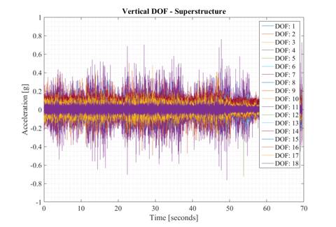 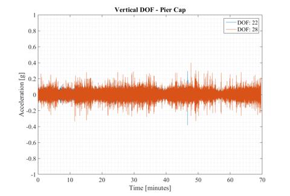
Time Plots - Transverse DOF
% plot vertical superstructure ind = dof.trans.sub; plot(tMins,data(:,ind)); title('Transverse DOF'); xlabel('Time [seconds]') ylabel('Acceleration [g]') ylim([-1 1]) grid minor legend(dof.labels(ind)) ah = gca; ah.FontName = 'Times'; ah.FontSize = 18; snapnow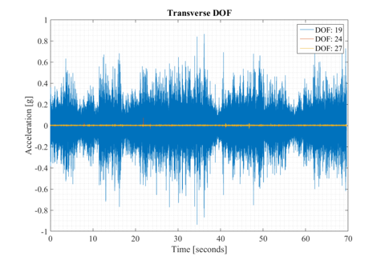
Time Plots - Longitudinal DOF
% plot vertical superstructure ind = dof.long.super; plot(tMins,data(:,ind)); title('Longitudinal DOF - Superstructure'); xlabel('Time [seconds]') ylabel('Acceleration [g]') ylim([-1 1]) grid minor legend(dof.labels(ind)) ah = gca; ah.FontName = 'Times'; ah.FontSize = 18; snapnow % plot vertical superstructure ind = dof.long.sub; plot(tMins,data(:,ind)); title('Longitudinal DOF - Substructure'); xlabel('Time [seconds]') ylabel('Acceleration [g]') ylim([-1 1]) grid minor legend(dof.labels(ind)) ah = gca; ah.FontName = 'Times'; ah.FontSize = 18; snapnow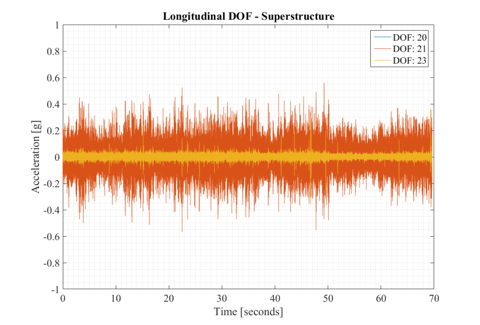 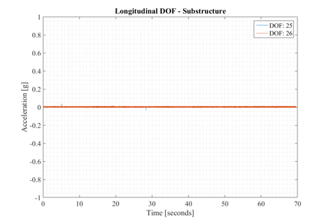
Power Spectral Density (PSD) - Plot All
Notes:
- Data record broken into 50 segments for averaging
- 75 percent overlap of each segment
- Default nfft
nAvg = 50; % number of averages perc = 75; % percent overlap nfft = []; % use default nfft lines % get psd [pxx,f] = getpsd(data,nAvg,perc,nfft,fs); % display frequency resolution fprintf('Observable frequency range: 0-%s[Hz]\n',num2str(f(end))); fprintf('Frequency resolution: %s[Hz]\n',num2str(f(2))); ind = 1:size(data,2); plot(f,mag2db(pxx(:,ind))) title('PSD - All DOF'); xlabel('Frequency [Hz]') ylabel('Power [dB]') grid minor legend(dof.labels(ind)) ah = gca; ah.FontName = 'Times'; ah.FontSize = 18; snapnow
Power Spectral Density DOF: 1 DOF: 2 DOF: 3 DOF: 4 DOF: 5 DOF: 6 DOF: 7 DOF: 8 DOF: 9 DOF: 10 DOF: 11 DOF: 12 DOF: 13 DOF: 14 DOF: 15 DOF: 16 DOF: 17 DOF: 18 DOF: 19 DOF: 20 DOF: 21 DOF: 22 DOF: 23 DOF: 24 DOF: 25 DOF: 26 DOF: 27 DOF: 28 Observable frequency range: 0-100[Hz] Frequency resolution: 0.0061035[Hz]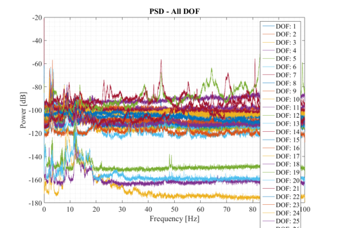
PSD - Plot Vertical
% full freq plot ind = dof.vert.super; plot(f,mag2db(pxx(:,ind))) title('PSD - Vertical - Superstructure'); xlabel('Frequency [Hz]') ylabel('Power [dB]') grid minor legend(dof.labels(ind)) ah = gca; ah.FontName = 'Times'; ah.FontSize = 18; snapnow % zoom to narrow freq bandwidth bnds = [1.5 5]; % freq bnds ind = dof.vert.super; plot(f,mag2db(pxx(:,ind))) title('PSD - Vertical - Superstructure - Zoom'); xlabel('Frequency [Hz]') ylabel('Power [dB]') xlim(bnds) grid minor legend(dof.labels(ind)) lh = get(gca,'children'); % find line handles of current axes set(lh,'linewidth',1); % set linewidth ah = gca; ah.FontName = 'Times'; ah.FontSize = 18; snapnow % PIER CAP - full freq plot ind = dof.vert.sub; plot(f,mag2db(pxx(:,ind))) title('PSD - Vertical - Pier Cap'); xlabel('Frequency [Hz]') ylabel('Power [dB]') grid minor legend(dof.labels(ind)) ah = gca; ah.FontName = 'Times'; ah.FontSize = 18; snapnow % PIER CAP - zoom to narrow freq bandwidth bnds = [1.5 10]; % freq bnds ind = dof.vert.sub; plot(f,mag2db(pxx(:,ind))) title('PSD - Vertical - Pier Cap - Zoom'); xlabel('Frequency [Hz]') ylabel('Power [dB]') xlim(bnds) grid minor legend(dof.labels(ind)) lh = get(gca,'children'); % find line handles of current axes set(lh,'linewidth',1); % set linewidth ah = gca; ah.FontName = 'Times'; ah.FontSize = 18; snapnow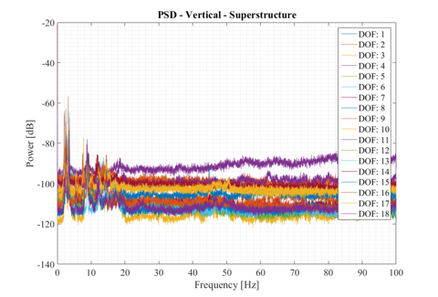 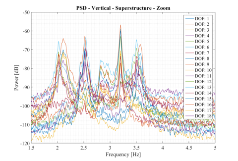 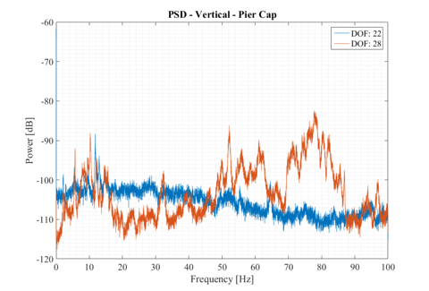 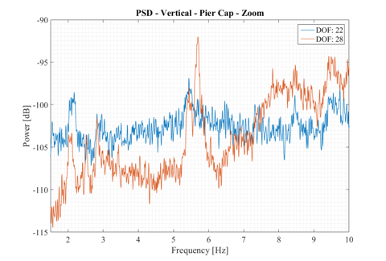
PSD - Plot Transverse
% full freq plot ind = dof.trans.sub; plot(f,mag2db(pxx(:,ind))) title('PSD - Transverse'); xlabel('Frequency [Hz]') ylabel('Power [dB]') grid minor legend(dof.labels(ind)) ah = gca; ah.FontName = 'Times'; ah.FontSize = 18; snapnow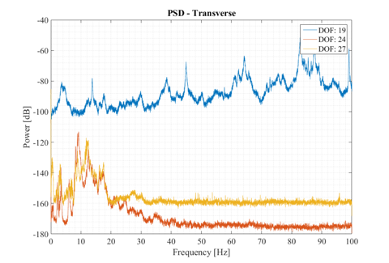
PSD - Plot Longitudinal
% full freq plot ind = dof.long.super; plot(f,mag2db(pxx(:,ind))) title('PSD - Longitudinal - Pier Cap'); xlabel('Frequency [Hz]') ylabel('Power [dB]') grid minor legend(dof.labels(ind)) ah = gca; ah.FontName = 'Times'; ah.FontSize = 18; snapnow % full freq plot ind = dof.long.sub; plot(f,mag2db(pxx(:,ind))) title('PSD - Longitudinal - Piers'); xlabel('Frequency [Hz]') ylabel('Power [dB]') grid minor legend(dof.labels(ind)) ah = gca; ah.FontName = 'Times'; ah.FontSize = 18; snapnow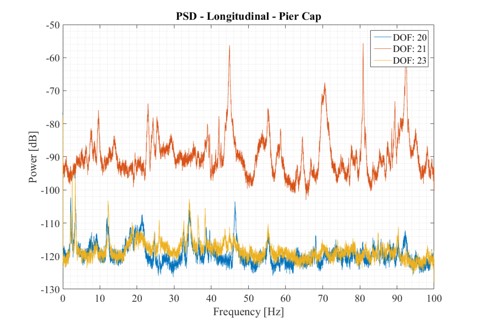 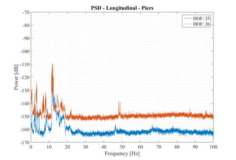